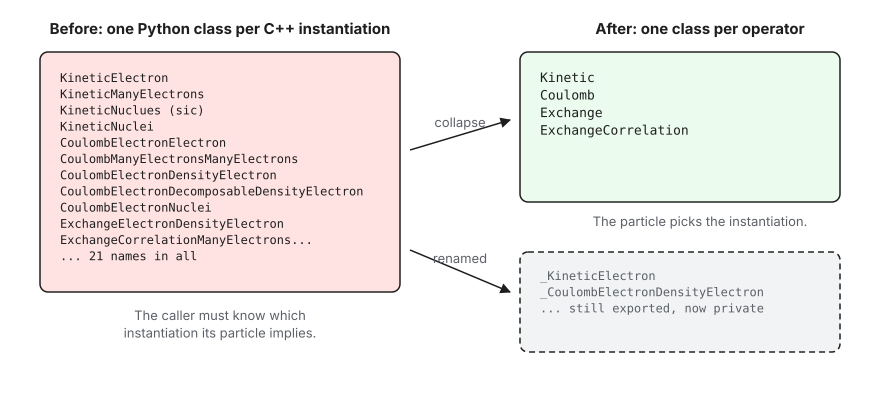
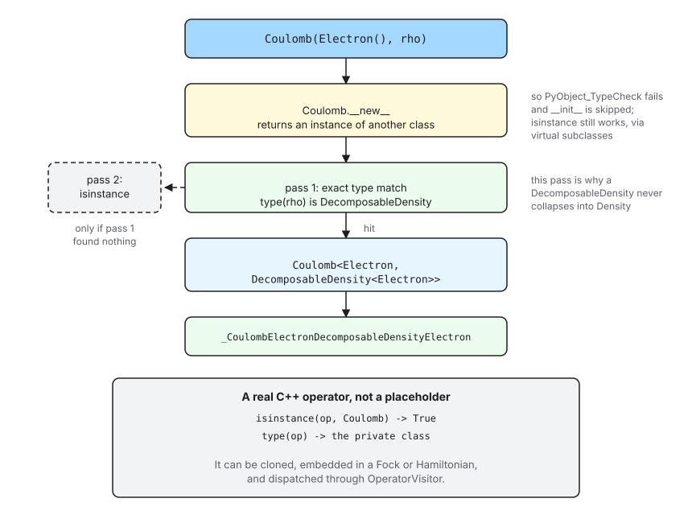
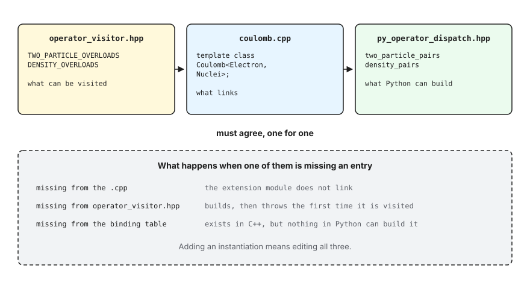

Exposing Operators to Python
Most of Chemist’s operators are class templates, e.g.,
Kinetic<ParticleType>, Coulomb<LHSParticle, RHSParticle>, and so on.
The APIs are designed so that C++ callers never think about this because the
template arguments are deduced by the compiler, e.g.,
Kinetic t_e(Electron()); // -> Kinetic<Electron>
Kinetic T_e(ManyElectrons(4)); // -> Kinetic<ManyElectrons>
Python has no such luxury because pybind11 can only export a concrete class
(i.e., the fully specified type), so a templated operator has to be exported
once per instantiation. This page explains the workaround we use, to get an
API that mirrors the C++ and how the bindings in
src/chemist/quantum_mechanics/operator/operator/ work.
The Problem
Exporting one Python class per instantiation means the instantiation’s template arguments end up in its Python name. The naive approach looks like:
py::class_<Kinetic<Electron>>(m, "KineticElectron");
py::class_<Kinetic<ManyElectrons>>(m, "KineticManyElectrons");
py::class_<Coulomb<Electron, Electron>>(m, "CoulombElectronElectron");
py::class_<Coulomb<ManyElectrons, Nuclei>>(m, "CoulombManyElectronsNuclei");
which produces a Python API that looks like:
from chemist import Electron, ManyElectrons, Nuclei
from chemist.qm_operator import *
t_e = KineticElectron()
T_e = KineticManyElect(ManyElectrons(4))

Fig. 18 Naively, every C++ instantiation surfaces as its own Python name. Now the instantiations are still exported, under underscore-prefixed names, that the Python user never sees. Python users only see the name of the operator.
The problems with this API are:
Ergonomics. A type like
CoulombManyElectronsDecomposableDensityElectronis not user-friendly.Maintenance. The list grows grows combinatorially with the number of particles and relies on developers maintaining consistency between several source files.
Solution

Fig. 19 One construction call, from Python syntax to a concrete C++ object.
Our solution uses two pieces of standard Python machinery, __new__ and
abstract base class registration. The basic idea is:
The operator “classes” that the users see, e.g.,
Kinetic,Coulomb, and so on, are built from C++ usingabc.ABCMeta. Their__new__is the dispatch function, so calling one returns an instance of a different class.The dispatch logic is simply a lookup table that maps the particle types to the exposed C++ type. For example,
Kinetic(Electron())causes the dispatch to return an instance of the Python type corresponding to the C++ typeKinetic<Electron>.Each instantiation is registered as a virtual subclass of the operator class. That is what keeps
isinstance(Kinetic(Electron()), Kinetic)true, even though the object’s actual type is_KineticElectron.
The key pieces of the implementation are:
export_instantiationsautomates the process of exposing names like_KineticElectronand_CoulombElectronElectronto Python.make_two_particle_dispatchbuilds a function which maps the two particles it is given to the correct instantiation. That function is what becomes__new__.Kinetic, being the only one-particle operator, spells the equivalent out inline rather than through a helper used once.Kinetic,Coulomb, etc. are created, given their__new__, and registered in theexport_dispatching_classfunction.
How Construction Is Redirected
Ultimately, each C++ instantiation must be exported to Python as a separate
class, so Kinetic(Electron()) has to hand back an object whose type is
not Kinetic. Python lets a class do exactly that: __new__ may return
anything at all.
The part worth knowing is what happens next. type.__call__ is, in essence:
obj = type->tp_new(type, args, kwds); /* i.e. cls.__new__ */
if (!PyObject_TypeCheck(obj, type))
return obj; /* __init__ is skipped */
Py_TYPE(obj)->tp_init(obj, args, kwds);
PyObject_TypeCheck is Py_IS_TYPE(...) || PyType_IsSubtype(...), a real
subtype test against the MRO. It is not isinstance(), and it never
consults __instancecheck__. Since _KineticElectron is not a subclass of
Kinetic, the check fails and __init__ is skipped. This matters: the
object __new__ returned is already fully constructed, and running
pybind11’s __init__ on it a second time would re-run the C++ constructor
over a live object.
That the check ignores isinstance is also what lets us have both halves at
once. Registering the instantiations with ABCMeta.register changes what
isinstance and issubclass answer without touching the MRO, so we get:
op = Kinetic(Electron())
isinstance(op, Kinetic) # True (registered)
isinstance(op, OperatorBase) # True (real base class)
issubclass(type(op), Kinetic) # True (registered)
type(op).__name__ # '_KineticElectron'
Note the last line. isinstance works, but the object’s type is the
private class, because it is a real Kinetic<Electron>. Code that compares
types exactly rather than using isinstance will see the private name.
Warning
The instantiations must stay virtual subclasses. If one is ever made a
real subclass of its operator class, PyObject_TypeCheck starts
succeeding and pybind11’s __init__ runs a second time on an
already-constructed object.
test_instantiations_are_registered_not_derived
pins this down by asserting Kinetic not in type(Kinetic()).__mro__.
The Alternative We Did Not Take
A custom metaclass overriding __call__ also works, and was what this code
did originally. __call__ on the metaclass replaces the construction
protocol outright, so nothing depends on the subtype rule above, and
__instancecheck__ can read the same table the dispatch uses instead of a
separate registration step.
It is the more explicit of the two, and if the __init__-skipping rule ever
feels too subtle to rely on, it is the thing to go back to. We chose
__new__ because it reaches the same place using machinery the standard
library already provides, rather than hand-building a metaclass from C++.
Be careful reasoning about the metaclass version, though. It is tempting to
justify it by claiming __new__ cannot work here, on the grounds that
making isinstance succeed would drag __init__ back in. That is wrong,
for the reason above: the construction path checks the MRO, not isinstance.
Selecting the Instantiation
select_pair walks the operator’s table of instantiations and builds the
first one whose particle types match. It walks the table twice: once
requiring an exact type match, and only then once allowing derived types.
The two passes exist because DecomposableDensity<Electron> derives from
Density<Electron>, in C++ and in the bindings. A single isinstance
pass would match whichever of the two is listed first, so a decomposable
density handed to Coulomb could silently produce the plain-density
instantiation, and the mistake would not surface until something looked at the
operator’s type. The exact pass removes the ordering dependence entirely; the
second pass is what still lets a Python subclass of a particle work.
The Tables, and Keeping Them Honest
The instantiations an operator is exported for live in one place,
py_operator_dispatch.hpp, as tables named after the OperatorVisitor
macros they mirror:
using one_particle_types = /* Electron, ManyElectrons, Nucleus, Nuclei */;
using two_particle_pairs = /* mirrors TWO_PARTICLE_OVERLOADS */;
using density_pairs = /* mirrors DENSITY_OVERLOADS */;
An operator covered by more than one macro joins them. Coulomb is the only
one today:
using table = join_tables<two_particle_pairs, density_pairs>;
These tables are the third of three lists that describe the same set of instantiations, and all three have to agree.

Fig. 20 The same set of instantiations is written down three times. Each omission fails in a different way, and only one of them fails at build time.
The failure modes are worth internalising, because only the first is loud:
Missing from the operator’s
.cpp: the extension module does not link.Missing from
operator_visitor.hpp: everything builds, and the operator throws the first time a visitor sees it.Missing from the table here: the instantiation exists in C++ and links fine, but no Python code can construct it.
What You Have to Write
Because the naming, registration, matching, and error messages are all derived
from the table, exporting a two-particle operator is now three lines plus a
docstring. The whole body of export_exchange.cpp is:
using table = density_pairs;
using default_pair = type_pair<Electron, chemist::Density<Electron>>;
auto impls = export_instantiations<Exchange, table>(m, "Exchange");
auto dispatch = make_two_particle_dispatch<Exchange, table, default_pair>(
"Exchange", "takes two particles");
export_dispatching_class(m, "Exchange", impls, dispatch, /* docstring */);
export_instantiations exports one class per table entry, naming each by
appending the particles’ suffixes to the operator’s name, so Exchange plus
Electron plus DensityElectron gives
_ExchangeElectronDensityElectron. The suffixes come from
particle_traits, which also carries the particle’s Python class name for
use in error messages; the two differ only for the densities, whose Python
classes are not templated.
make_two_particle_dispatch builds the dispatch function. Its template
parameters are the only things that vary between operators: the table, the
instantiation a no-argument call builds, and, optionally, the ctor arguments
that precede the particles. ExchangeCorrelation is the only operator that
needs the last one, because its functional comes first:
using leading_args = std::tuple<xc_functional>;
auto dispatch =
make_two_particle_dispatch<ExchangeCorrelation, table, default_pair,
leading_args>(
"ExchangeCorrelation", "takes a functional and two particles");
The error messages are generated from the table too, so they cannot drift from what the operator actually supports:
>>> Exchange(Electron(), Nuclei())
TypeError: Exchange can not describe the interaction of a Electron with a
Nuclei. Supported combinations are: (Electron, Density),
(ManyElectrons, Density), (Electron, DecomposableDensity),
(ManyElectrons, DecomposableDensity).
Customizing an Operator
export_instantiations adds what every operator has: a default ctor,
comparisons, and a property per particle. Anything else is the job of the
customization object, which defaults to default_customize and just adds the
ctor taking the particles by value. ExchangeCorrelation supplies its own
because it has a different value ctor and a functional_name property. If
you add an operator that is shaped like the others, you do not write one at
all.
Adding an Instantiation
Add it to the table, to operator_visitor.hpp, and to the operator’s
.cpp. Nothing else, and no new name string. Then add a Python test that
asserts the dispatch picks it, following the TestKineticDispatch pattern in
tests/python/unit_tests/quantum_mechanics/operators/.
If the new instantiation’s particle type derives from one already in the table,
also add a test that it selects its own instantiation rather than its base’s.
That is the DecomposableDensity case above, and it is the one bug in this
machinery that a passing build will happily hide.
Editing the Figures
The figures on this page are Excalidraw scenes. Each .svg in assets/
has an .excalidraw file beside it holding the same drawing; open that file
at https://excalidraw.com to edit it, then export the result over the
.svg.